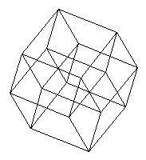

| Finite
Geometry Notes |
|
Passages from a classic story:
... he took from his pocket a gadget he had found in the box, and began to unfold it. The result resembled a tesseract, strung with beads.... 
Tesseract "Your mind has been conditioned to Euclid," Holloway said. "So this-- thing-- bores us, and seems pointless. But a child knows nothing of Euclid. A different sort of geometry from ours wouldn't impress him as being illogical. He believes what he sees." "Are you trying to tell me that this gadget's got a fourth dimensional extension?" Paradine demanded. "Not visually, anyway," Holloway denied. "All I say is that our minds, conditioned to Euclid, can see nothing in this but an illogical tangle of wires. But a child-- especially a baby-- might see more. Not at first. It'd be a puzzle, of course. Only a child wouldn't be handicapped by too many preconceived ideas." "Hardening of the thought-arteries," Jane interjected. Paradine was not convinced. "Then a baby could work calculus better than Einstein? No, I don't mean that. I can see your point, more or less clearly. Only--" "Well, look. Let's suppose there are two kinds of geometry-- we'll limit it, for the sake of the example. Our kind, Euclidean, and another, which we'll call x. X hasn't much relationship to Euclid. It's based on different theorems. Two and two needn't equal four in it; they could equal y, or they might not even equal. A baby's mind is not yet conditioned, except by certain questionable factors of heredity and environment. Start the infant on Euclid--" "Poor kid," Jane said. Holloway shot her a quick glance. "The basis of Euclid. Alphabet blocks. Math, geometry, algebra-- they come much later. We're familiar with that development. On the other hand, start the baby with the basic principles of our x logic--" "Blocks? What kind?" Holloway looked at the abacus. "It wouldn't make much sense to us. But we've been conditioned to Euclid." -- "Mimsy Were the Borogoves," Lewis Padgett, 1943 |